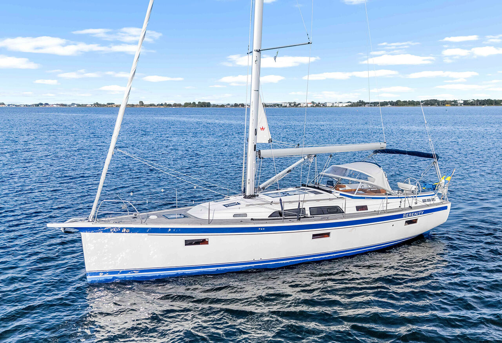
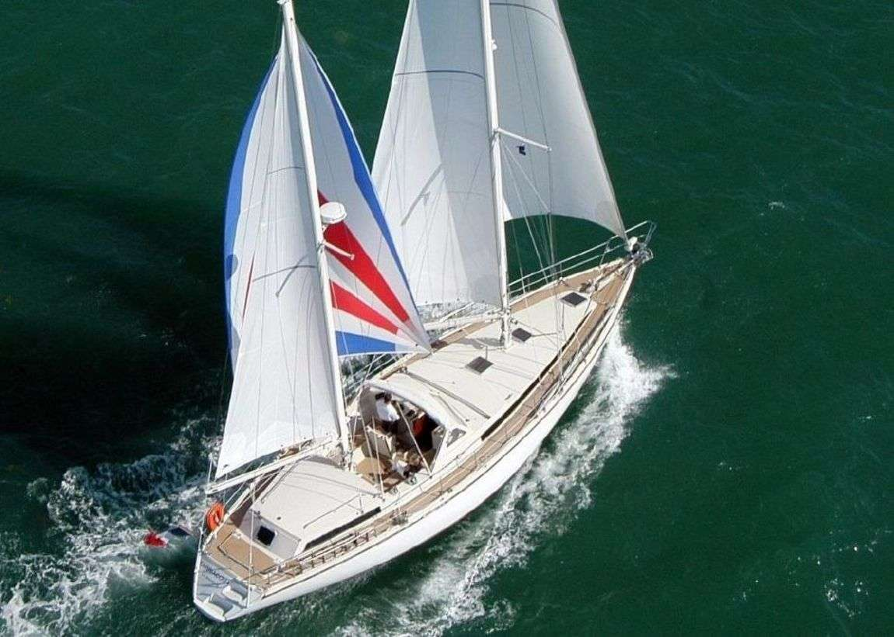

Океанские тяжеловесы: Hallberg-Rassy 412 vs Amel 55 vs Super Maramu
Трезвый инженерный разбор легендарных парусных кораблей высшего эшелона надежности. Скрытые дефекты, специфика обслуживания закрытых кокпитов, реальная стоимость владения и ликвидность на вторичном рынке.
⚓️ В двух словах: кто есть кто
Премиальные экспедиционные лодки — это совершенно иная лига судостроения. Спрос на них на вторичном рынке колоссален, а цены на ухоженные экземпляры с возрастом легко конкурируют со стоимостью новых современных масс-маркет судов. Их ценят за исключительную автономность, монолитную жесткость конструкций и готовность к экстремальным штормовым условиям, а не за изменчивой интерьерной модой.
| Параметр | Hallberg-Rassy 412 | Amel 55 | Amel Super Maramu |
|---|---|---|---|
| Проектировщик | German Frers / HR | Amel (Henri Amel) | Amel |
| Годы выпуска | 2011 – 2021 | 2010 – 2017 | 1990 – 2009 |
| Длина (LOA) | 12.61 м | 17.30 м | 15.86 м |
| Ширина | 4.11 м | 4.99 м | 4.60 м |
| Осадка | 1.99 м | 2.10 – 2.30 м | 2.10 м |
| Водоизмещение | 11 100 кг | 17 000 кг | 16 000 кг |
| Балласт (киль) | 4 000 кг (свинец) | 5 000 кг | 5 000 кг |
| Двигатель | Volvo Penta D2-75 (75 л.с.) | Yanmar / Volvo 110-160 л.с. | Perkins / Volvo 75-100 л.с. |
| Каюты | 2 / 3 | 3 | 3 |
| Топливо / вода | 350 л / 600 л | 950 л / 900 л | 500 л / 850 л |
| Цена новая (база) | ~480 тыс. € | ~900 тыс. € | ~400 тыс. € |
| Цена б/у | 350–450 тыс. € | 500–800 тыс. € | 150–250 тыс. € |
📸 Фотохроника моделей


🇸🇪 Hallberg-Rassy 412: Шведская королева
Настоящий внедорожник представительского класса на воде. Вопреки стереотипам о медлительности тяжелых скандинавских судов, обводы от German Frers и эффективное парусное вооружение площадью 90 кв.м позволяют лодке уверенно держать ход. При 12 узлах истинного ветра крейсер стабильно развивает 7.5 узлов, демонстрируя острый угол лавировки и мягкий шаг на встречной волне.
Вся проводка бегучего такелажа скрыта под палубными пазами и выведена напрямую к эргономичному полузакрытому кокпиту под защитное ветровое стекло, что позволяет без труда управлять лодкой в одиночку. Интерьер выполнен вручную из массива красного тика — это полноценная мебельная архитектура. Интегральная силовая сетка и трехслойное формование с Divinycell обеспечивают корпусу феноменальную жесткость.
- Плюсы: Эталонный безопасный центральный или глубокий кормовой кокпит с круговой защитой от брызг; безупречный доступ к двигателю и ключевым узлам прямо из салона; высочайшая остаточная стоимость.
- Минусы: Натуральный тиковый настил палубы требует регулярной дорогой заботы; скромный размер ахтерпика (тендер более 2.5 метров убрать проблематично); узкий гостевой проход при двухкаютной планировке.
🇫🇷 Amel 55 & Super Maramu: Французские линкоры автономии
Философия Анри Амеля — это абсолютное уединение в океане без оглядки на береговую инфраструктуру. Эти двухмачтовые кечи спроектированы как монолитные штормовые шлюпы с четырьмя полноценными водонепроницаемыми переборками. Глубокий защищенный кокпит полностью закрыт жестким хардтопом и остеклением, формируя герм-рубку для вахты.
Управление парусами тотально автоматизировано: закрутки грота, бизани и стакселей оснащены мощными электроприводами с дублированием ручного резерва. Уникальная черта трансмиссии Amel — гребной винт интегрирован непосредственно в обтекатель фальшкиля. Намотать на него обрывки сетей или швартовный конец физически невозможно.
- Плюсы: Легендарная неуязвимость движителя в киле; управление всей парусной площадью кнопками с поста рулевого в одиночку; баки на 1000 литров топлива; фирменная палуба Amel Teak (не гниющий пластиковый спец-палубный настил).
- Минусы: Обратная связь на штурвале практически отсутствует (руль тяжеловат в свежий ветер); высокая сложность разветвленной бортовой электрики; дефицит предложений на вторичном рынке.
⚔️ Лобовое сравнение: Шведский пуризм против французского линкора
| Характеристика | Hallberg-Rassy 412 | Amel 55 |
|---|---|---|
| Класс | Люксовый экспедиционный круизёр | Специализированный океанский крейсер |
| Тип вооружения | Бермудский шлюп | Двухмачтовый кеч |
| Кокпит | Защищенный глубокий с ветровым стеклом | Центральный закрытый хардтоп-кокон |
| Переборки безопасности | 2 | 4 (полностью водонепроницаемые) |
| Автономность | Средняя (топливный бак ~350 л) | Абсолютная (топливный бак до 1000 л) |
🩺 Содержание легенды: О чем умалчивают брокеры
| Статья бюджета | Hallberg-Rassy 412 | Amel 55 |
|---|---|---|
| Базовое годовое ТО систем у официалов | 7 000 – 10 000 € | 10 000 – 15 000 € |
| Замена стоячего такелажа (раз в 10 лет) | 12 000 – 18 000 € | 18 000 – 25 000 € (две мачты) |
| Уход за палубным покрытием | 3 000 – 5 000 € (шлифовка тика) | 0 € (Спецпластик Amel Teak) |
| Капитальный рефит приводов (15 лет) | 40 000 – 60 000 € | 50 000 – 80 000 € (множество редукторов) |
💎 Итоговый шкиперский вердикт
Эти лодки не покупают на сезон — это выбор на десятилетия. Hallberg-Rassy 412 — идеальный выбор для парусных аристократов, ценящих безупречную классическую плотницкую работу, чистую ручную обратную связь на руле и готовность к сложной северной волне. Семейство Amel (55 и легендарный Super Maramu) — это бескомпромиссные штормовые линкоры для кругосветных автономий, где управление огромной парусностью сведено к нажатию кнопок в сухом закрытом коконе. Если бюджет ограничен, но мечта об океане требует премиум-прочности — ищите живой Amel Super Maramu, его неубиваемый силовой каркас простит любые шторма.